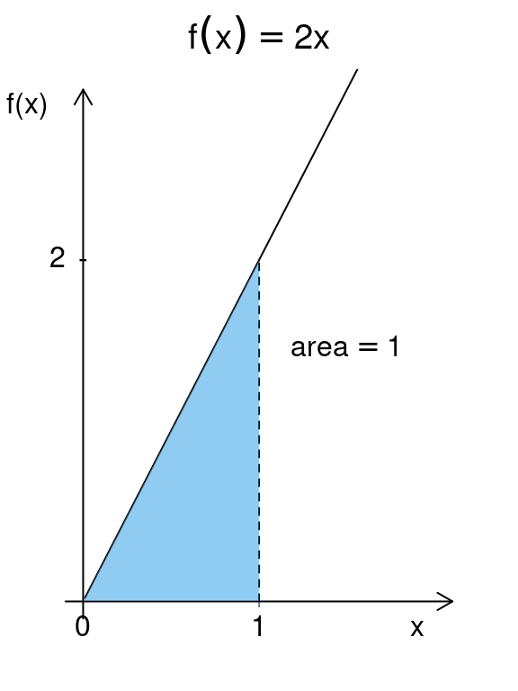
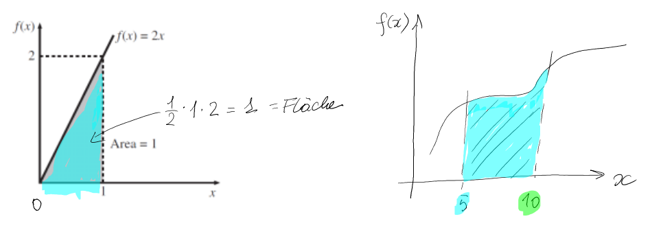
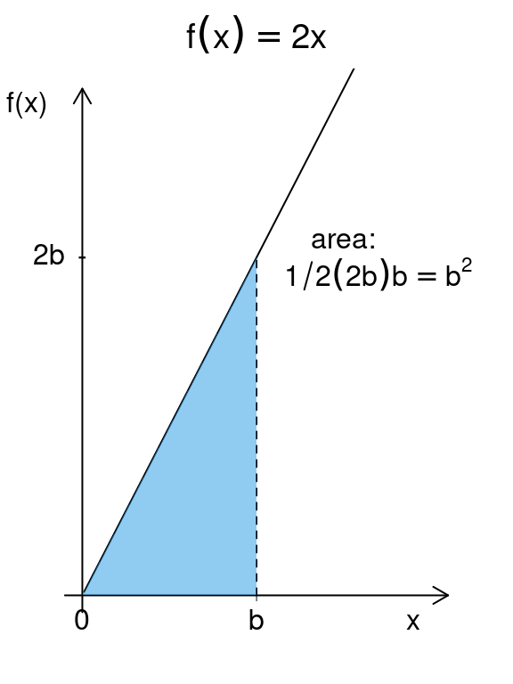
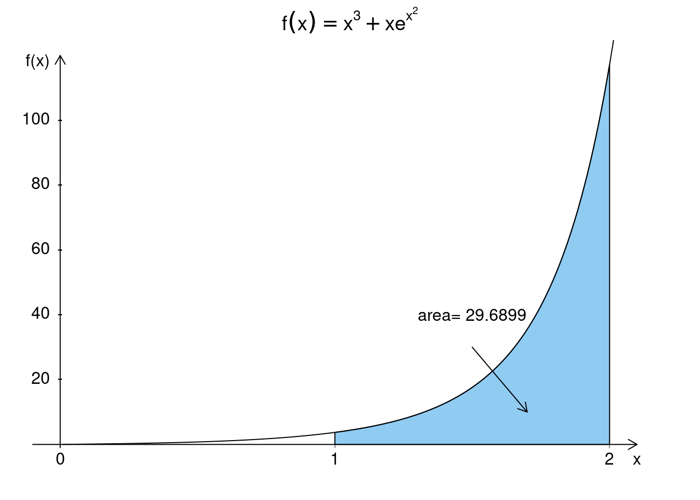
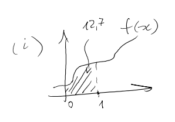
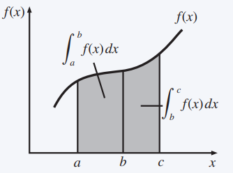
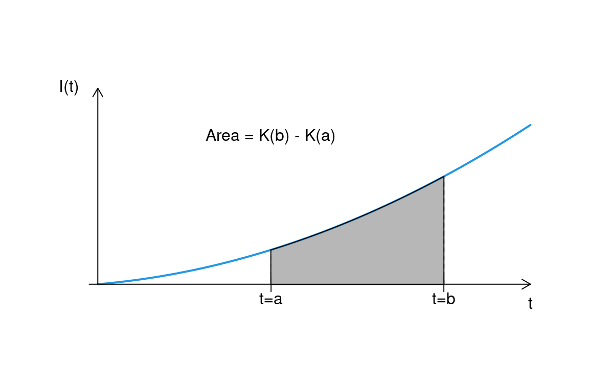
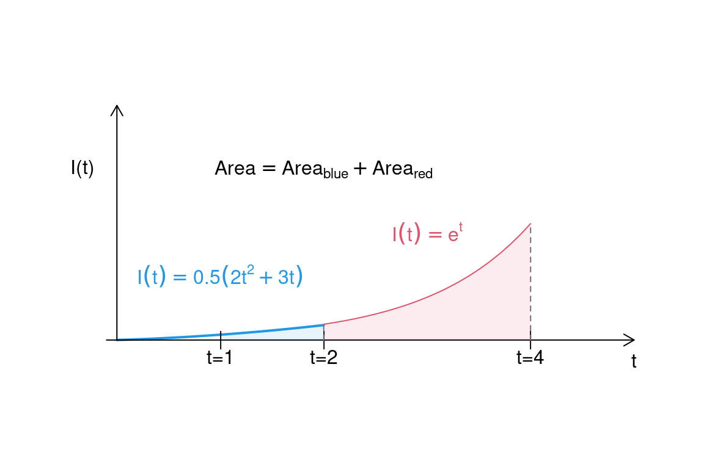

Chapter 7 Integral calculus
In the following, we will deal with the question of whether and how the underlying function \(f (x)\) can be derived from a given derivative function \(f' (x)\).
This process - the determination of the (indefinite) integral - is the inverse of differentiating.
One application of the integral calculus is the determination of the area below a function graph.
Further applications in economics result, for example, from the consideration of marginal costs and total costs.
Example 7.1 (marginal cost function) A firm produces a good with the following marginal cost function \(C'\) :
\(C' (x) = 0.3x^ 2 − 4x + 21\).
How can the company determine the total cost function \(C\) from this?
So we are looking for a function \(C\) such that its derivative is \(C'\).
One easily verifies that the function
\(C(x) = 0.1x^ 3 − 2x^ 2 + 21x\)
meets this requirement.
Note that any other function of the form
\(C(x) = 0.1x^ 3 − 2x^ 2 + 21x + c\), \(c\) constant,
(e.g. \(c\) = fixed costs) fulfills the condition.7.1 The indefinite integral
For the function \(f (x) = x^ 2\) we already know that \(f' (x) = 2x\) applies.
Conversely, if it is known that \(f' (x) = 2x\), it is clear that \(f (x) = x^ 2\) is a function with this derivative.
Any other function of the form \(f (x) = x^ 2 + c\) with \(c\) constant, but has the same derivative!
Starting from a derivation, the function itself cannot be determined unambiguously, but only up to an (unknown) constant.
The reverse process of differentiation is called integration or integrating.
In the example, the cost function (apart from the fixed costs) is obtained from the marginal cost function \(C'\) by integration.
Definition 7.1 (Indefinite integral) Let \(f\) be a continuous function in the interval \([a,b]\). A differentiable function \(F\) in \([a,b]\) is called antiderivative of \(f\) if: \(F' (x) = f (x)\) or \(dF / dx = f (x)\).
Example 7.2 (Some antiderivatives)
Antiderivatives of \(f (x) = x\) are about \(F(x)= \frac{1}{2}x^2\) and \(F(x)= \frac{1}{2 }x^2 +7\).
Antiderivative of \(f (x) = 1/x\) , \(x > 0\), \(F(x) = \ln x + c\) (\(c\): constant), because \(F' (x) = 1/x.\)
Definition 7.2 (Indefinite integral) The set of all antiderivatives of f is called indefinite integral and denoted by \(\int f (x) dx\). The function \(f (x)\) is called Integrand.
Example 7.2 (Some integrals)
- \(\int 4x^ 3 dx = x^ 4 + c\)
- \(\int 7t^ 6 dt = t^ 7 + c\)
- \(\int e^ z dz = e^ z + c\).
The following rules help to find indefinite integrals.
Theorem 7.1 (Basic integrals) Let: \(g\) be a continuous function; \(n\), \(c\), \(a\), \(b\) real constants. \[\begin{equation*} \def\arraystretch{1.9} \begin{array}[t]{l|llll} \hline & \text{function } f(x) & \int f(x)\, \text{d} x & remark\\\hline\hline 1& x^n & \displaystyle \frac{x^{n+1}}{n+1} + c & n\not=-1\\\hline 2& (ax + b)^n & \displaystyle \frac{1}{a} \cdot \frac{(ax + b)^{n+1}} {n+1} + c\\\hline 3& \displaystyle \frac{1}{x} & \ln |x| + c\\\hline 4& \displaystyle\frac{1} {ax +b} & \displaystyle \frac{1}{a} \ln |ax+b| + c & a\not=0\\\hline \end{array} \end{equation*}\]
\[\begin{equation*} \def\arraystretch{1.9} \begin{array}[t]{l|llll} \hline% & \text{function } f(x) & \int f(x)\, \text{d} x & remark\\\hline\hline 5& \displaystyle\frac{g^\prime(x)}{g(x)} & \ln |g(x)| + c\\\hline 6& \text{e}^x & \text{e}^x + c\\\hline 7& \text{e}^{ax+b} & \frac{1}{a} \text{e}^{ax+b} + c & a\not=0\\\hline 8& g^\prime(x) \text{e}^{g(x)} & \text{e}^{g(x)} + c\\\hline 9& g(x)\cdot g^\prime(x)& \tfrac{1}{2}(g(x))^2 + c\\\hline \end{array} \end{equation*}\]
Example 7.3 (Application of the rules)
\(\int dx = \int 1 \cdot dx = \int x^0 \cdot dx = x + c\) (Rule 1 with \(n = 0\))
\(\int \sqrt{y} \ dy= \int {y}^{1/2} dy= \color{blue}{\frac{2}{3}} {y}^{\color{red }{3/2}}+c\) (Rule 1 with \(n=\frac 12\) therefore \(n+1=\color{red}{\frac{3}{2}}\) and \(\frac 1{n+1} = \color{blue}{\frac{2}{3}}\))
\(\int (\color{red}{3}z-2)^2 \ dz = \frac{1}{\color{red}{3}} \frac{(3z-2)^\color{ blue}{3}}{\color{blue}{3}}+c = \frac 19 (3z-2)^3+c\) (Rule 2 with \(a=\color{red}{3}\ ) and \(n=2\) therefore \(n+1=\color{blue}{3}\))
\(\int \frac 1{\color{blue}{2}x-5}\ dx = \frac 1{\color{blue}{2}}\ln|\color{blue}{2}x- 5|+c\) (Rule 4 with \(a=\color{blue}{2}\))
\(\int \frac {\color{red}{x}}{\color{blue}{0.5x^2-1}}\ dx = \ln|\color{blue}{0.5x^2-1 }|+c\) (Rule 5 with \(g(x)=\color{blue}{0.5x^2-1}\) hence (g’(x) = ))
\(\int e ^{\color{red}{0.5}t-7} \ dt = \color{blue}{2} \cdot e^{\color{red}{0.5}t- 7}+c\) (Rule 7 with \(a=\color{red}{0.5}\) therefore \(\frac 1a = \color{blue}{2}\))
\(\int \color{red}{4x}\cdot e ^{\color{blue}{2x^2}} \ dt = e^{\color{blue}{2x^2}}+c\) (Rule 8 with \(g(x)={\color{blue}{2x^2}}\) therefore \(g'(x)={\color{red}{4x}}\))
\(\int 9\cdot\color{red}{(3x-2)} \ dx = \int 3\cdot 3\cdot\color{red}{(3x-2)} \ dx =3\cdot\ int \color{blue}{3}\cdot\color{red}{(3x-2)} \ dx = 3\cdot \frac 12\color{red}{(3x-2)}^2\) (Rule 9 with \(g(x)=\color{red}{(3x-2)}\) and therefore \(g'(x) = \color{blue}{3}\))
Theorem 7.2 (Calculation rules for integrals) Let \(f\) and \(g\) be continuous functions and \(k\) be a constant. Then:
\(\int k \cdot f (x) dx = k \cdot \int f (x) dx\)
\(\int (f (x) + g(x)) dx =\int f (x) dx + \int g(x) dx\)
Example 7.4 (Application of the rules and Theorem 7.2)
\(\int dx = \int \underbrace{12x}_{3\cdot4x}\cdot e^{2x^2+1} \cdot dx \stackrel{Thm.7.2 i}{=} 3\cdot{\color{red}{\int 4x\cdot e^{2x^2+1} \cdot dx}} = 3\cdot\color{red}{e^{2x^2+1} }+ c\) (Rule 8 with \(g(x) = 2x^2+1\) and \(g^\prime(x)=4x\)).
\(\int \big(\underbrace{\frac2{3x+4}}_{\frac{2\cdot 1}{3x+4}} + e^x\big)dx\stackrel{Thm.7.2 i,ii}{=} 2\cdot\color{red}{\int \frac1{3x+4}dx} + \color{green}{\int e^xdx}= 2\cdot\color{red}{\frac13\ln|3x+4|} + \color{green}{e^x} + c\) (Rule 4 with \(a=3\))
Apply the above calculation rules for solving the following problems.
Exercise 7.1 (Calculation of integrals) Calculate:
- \(\int \ 6x^2 dx\)
Answer
\(= 6 \cdot \int x^2dx= 6 \cdot \frac{x^{2+1}}{2+1} +c= 6 \cdot (x^3/3) + c= 2x^3 +c\) (Rule 1)
(ii) \(\int \frac{-1}{x} dx\)
Answer
\(= -1 \int \frac{1}{x} dx = -1 \cdot ln (x) + c = - ln(x) + c\) (Rule 3)
(iii) \(\int (8x^3 − 4x + 2) dx\)
Answer
\(= \int 8x^3dx + \int -4xdx + \int 2dx = 8 \cdot \int x^3dx + (-4) \cdot \int xdx + 2 \cdot \int 1dx\) \(= 8 (x^4/ 4)-4 (x^2/2+2x+c = 2x^4 - 2x^2+2x+c\) (Rule 1)
(iv) \(\int x^{3/2} dx\)
Answer
\(= \frac{x ^{\frac{3}{2}+1 }}{ \frac{3}{2}+1 } +c = \frac{x^ \frac{5}{2} } { \frac{5}{2} } +c = \frac{2}{5} x ^ {\frac{5}{2}}+c\) (Rule 2)
(v) \(\int 6x \cdot \ e^{x^2} dx\)
Answer
\(= \int 3 \cdot 2x \cdot e^{x^2} dx = 3 \cdot \int 2x \cdot e^{x^2} dx = 3 \cdot e^{x^2} +c\) (Rule 8)
(vi) \(\int \frac{3x^2+2}{x^3+2x} dx\)
Answer
\(= ln (x^3+2x)+c\) (Rule 5)The generally unknown integration constant \(c\) can be calculated with the help of additional information, such as the function value at a point.
Example 7.5 (Calculation of the integration constant) If, as in the above exercise \((i)\), you additionally know the function value in e.g. in \(0\), you can use this to calculate the value for the integration constant. That is, from \(F(0)=10\) and \(F(x)= 2x^3 + c\), one calculates:
\[2\cdot 0^3 + c = 10\rightarrow c = 10.\]
So the antiderivative is: \(F(x) = 2x^3 + 10.\)
Exercise 7.2 (Calculating integration constants) Determine the integral and the integration constant \(c\):
- \(F(x) = \int x^{1/2} dx\), \(F(0) = 5\)
Answer
\(=\frac{x^{(1/2+1)}}{1/2+1} +c = \frac{x^{(3/2)}}{3/2} + c = \frac{2}{3}x^{(3/2)}+c = F(x).\)
We know: \(F(0)=5\), i.e. \((2/3) \cdot 0^{(3/2)} +c =5 \Rightarrow \ c=5\)
\(\rightarrow F(x)=2/3x^{3/2}+5.\)
(ii) \(F(x) = \int (2x^3 + 4x) dx\), \(F(0) = 0\)
Answer
\(= \int 2x^3dx + \int 4x dx = 2 \cdot \int x^3dx +4 \cdot \int x dx=2 \cdot x^4/4+4 \cdot x^2/2 +c=x^4/2+2x^2+c.\)
We know: \(F(0)=0\), i.e. \(0^4/2+2 \cdot 0^2 +c=0 \Rightarrow c=0\)
\(\rightarrow F(x)=(x^4)/2+2x^2\)
Exercise 7.3 (Total cost and unit cost) A firm produces with the following marginal cost function:
\(C' (x) = 1.5x^2 − 4x + 4\).
With an output of \(10\) units of quantity, the total costs are \(372\) monetary units.
Find the total cost \(C(x)\) and unit cost functions \(\frac{C(x)}{x}\).
Answer
Total cost function: find the antiderivative of \(C'(x)\):
\[\begin{align}C(x) &= \int C'(x) dx \)=\int (1.5x^2-4x+4) dx \\ &=\int 1.5x^2dx + \int (-4)xdx+ \int 4dx \\ &= 1.5 \int x^2dx + (-4) \int xdx+ 4\int 1dx \\ &= 1.5 \frac{x^3}{3} + (-4) \frac{x^2}{2} + 4x +c. \end{align}\]
\(c\) is still being sought.
Additionally given: \(C(10)=372\), i.e. \(0.5 \cdot 10^3 - 2 \cdot 10^2 + 4 \cdot 10 + c = 372.\) Then: \(c =372-340=32.\)
Total cost function: \(C(x) = 0.5x^3-2x^2+4x+32\)
Unit cost function: \(\frac{C(x)}{x} =0.5x^2-2x+4+ \frac{32}{x}\)
7.2 The definite integral
Let \(f\) be a continuous and positive function.
The definite integral, also Riemann integral, is defined as the area on an interval piece between the \(x\) axis and the function graph of \(f\) .
For example, consider the function \(f (x) = 2x\) on the interval \([0,1]\).
One thing is clear: The area below \(f\) is \(1\) (height x width of the rectangle divided by \(2\)).
The integral calculus offers the mathematical apparatus to determine the area for non-linear functions.

Details
Theorem 7.3 (The main theorem of integral calculus) The function \(f\) is continuous on the interval \([a,b]\) and \(F\) is an antiderivative (indefinite integral) of \(f\) . Then: \(\int_{a}^{b} f(x)dx=F(b)-F(a)\).
For the expression \(F(b) − F(a)\) the notation \([F(x)]_a ^b\) is also used.
The constant of integration can be ignored because it cancels out:
\((F(b) + c) − (F(a) + c) = F(b) − F(a)\).
In practice, one determines the antiderivative, inserts the interval limits \(a\) and \(b\) and evaluates the difference \(F(b) − F(a)\).
Example 7.6 (Definite integrals) The example \(f (x) = 2x\) on the interval \([0,1]\) results in:
\(\int_{0}^{1} 2xdx = F(1)-F(0)= \left[ x^2 \right]_0^1 = 1^2 - 0^2 = 1\).
A little more general:
\(\int_{0}^{b} 2xdx = \left[ x^2 \right]_0^b = b^2\) .

Example 7.7 (Definite integrals) Let \(f (x) = x^3 + xe^{x^2}\).
The antiderivative is \(F(x)= \frac14x^4 + \frac 12 \cdot e^{x^2}\).
The area on \([0.5,1]\) is:
\(\int_{1}^{2} x^3 + xe^{x^2}dx = \left[ \frac14x^4 + \frac 12 \cdot e^{x^2} \right] _{1}^2 = \frac14 \cdot 2^4 + \frac 12 \cdot e^{2^2}- \frac14 \cdot 1^4 - \frac 12 \cdot e^{1^2} = 29.69.\)

Exercise 7.4 (Calculate definite integrals) Given:
- \(\int_{0}^{1} (4x^4+2x^3+4x+10) dx\)
Answer
\(= \int_{0}^{1} x^4dx + \int_{0}^{1} 2x^3dx + \int_{0}^{1} 4xdx + \int_{0}^{1} 10dx =\)
\(\int_{0}^{1} x^4dx + 2 \cdot \int_{0}^{1} x^3dx + 4 \cdot \int_{0}^{1} xdx + 10 \cdot \int_ {0}^{1} 1 \ \cdot dx=\)
\(\left[ \frac{x^5}{5} \right]_0^1 + 2 \cdot \left[ \frac{x^4}{4} \right]_0^1 + 4 \cdot \left [ \frac{x^2}{2} \right]_0^1 + 10 \cdot \left[ x \right]_0^1 =\)
\(\frac{1^5}{5} + 2 \cdot \frac{1^4}{4} +4 \cdot \frac{1^2}{2} + 10 \cdot 1 - ( \frac{ 0^5}{5} + 2 \cdot \frac{0^4}{4} + 4 \cdot \frac{0^2}{2} + 10 \cdot 0)=\)
\(\frac{1}{5}+ \frac{1}{2}+2+10=12.7\)

(ii) \(\int_{0}^{8} {x}^{2/3} dx\)
Answer
\(= \left[ \frac{x^{2/3+1}}{ \frac{2}{3}+1 } \right]_0^8 = \left[ \frac{x^{5/3}}{ \frac{5}{3} } \right]_0^8 = \left[ \frac{3}{5} \cdot x^{5/3} \right]_0^8 =\)
\(\frac{3}{5} \cdot 8^{5/3} - \frac{3}{5} \cdot \sqrt[3]{8^5} =19.2\)
(iii) \(\int_{1}^{2} 6x \cdot e^{x^2} dx\).
Answer
\(= \left[ 3 \cdot e^{x^2} + c \right]_1^2 = 3 \cdot e^{2^2} - 3 \cdot e^{1^2} = 3 (e^4-e)= 155.6392\)
7.2.1 Properties and elementary calculation rules
The following properties make calculating with integrals easier.
Theorem 7.4 (Properties of definite integrals I) Let \(f\) and \(g\) be two integrable functions on \([a,b]\) and let \(k\) be a real constant. Then:
\(\int_{a}^{b}k \cdot f(x)dx= k \cdot \int_a^b f(x)dx\),
\(\int_{a}^{b}(f(x)+g(x))dx= \int_a^b f(x)dx +\int_a^b g(x)dx\).
Theorem 7.5 (Properties of definite integrals II) Let \(f\) be integrable in \([a,b]\) and in \([b,c]\). Then: \(\int_{a}^{c} (f(x) dx = \int_a^b f(x)dx + \int_b^c f(x)dx\). 
Theorem 7.6 (Properties of definite integrals III) Let \(f\) be integrable. Then:
\(\int_{a}^{a} (f(x) dx = \lim_{c \rightarrow a} \int_a^c f(x)dx =0\),
\(\int_{c}^{a} f(x) dx = - \int_a^c f(x)dx\).
Example 7.8 (capital growth) In numerous applications, the integral conveniently represents the course of an economic quantity over time.
The function \(K(t)\) describes the capital of a company over time.
It is \(K(t + \Delta t) − K(t)\) the capital increase or capital outflow in the time period \([t,t + \Delta t]\) and \(\frac{K(t+ \triangle t)-K(t)}{ \triangle t}\) is the (average) rate of change for that time period.
The instantaneous rate of change in \(t\) is
\(\lim_{ \triangle t \rightarrow 0} \frac{K(t+ \triangle t)-K(t)}{ \triangle t} = \frac{dK(t)}{dt} =I(t)\). (=investment)
- Since \(I(t)\) is the derivative of \(K(t)\), it follows conversely that \(K(t)\) is the (indefinite) integral of \(I(t)\). , i.e. \(\int I(t) dt = K(t)\).
The sum of the net investments between two points in time \(a\) and \(b\) is given by the instantaneous changes in capital, and the following applies:
\(K(b) − K(a) = \int_a^b I(t) dt\). (capital growth)

- We calculate the capital growth between periods 1 and 2 for \(I(t)=2t^2+3t\):
\[\begin{align*} \int_1^2 I(t)dt&= \int _1^2(2t^2+3t)dt= \left[ 2 \cdot (t^3/3)+3 \cdot (t^2 /2)\right]_1^2\\ &= 2 \cdot (2^3/3) + 3 \cdot (2^2/2) - (2 \cdot (1^3/3) + 3 \cdot 1^2/2)) \\ &= 16/3+12/2-2/3-2/3=14/3+9/2=55/6. \end{align*}\]
- We calculate the capital growth between periods 1 and 4 for \(I(t)=\begin{cases}0.5(2t^2+3t),&t\in[1,2)\\ e^t,&t\in[2,4)\end{cases}\)
 \[\begin{align*} \int_1^4 I(t)dt&\stackrel{Thm. 7.4 ii}= \int_1^2 I(t)dt + \int_2^4 I(t)dt\\ &= \underbrace{\int_1^20.5(2t^2+3t)dt}_{\stackrel{Thm. 7.4 i}=0.5\int_1^2(2t^2+3t)dt = 0.5\cdot 55/6 = 55/12} + \int _2^4e^tdt\\ &\\ &= \frac{55}{12} + \left[ e^t\right]_2^4 = \frac{55}{12} + (e^4 - e^2) \\ &= 51.7924. \end{align*}\]